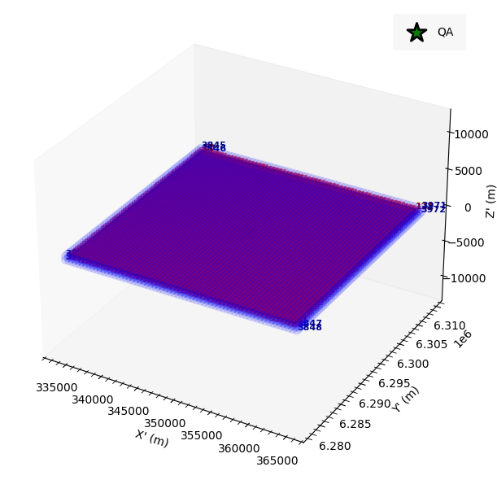
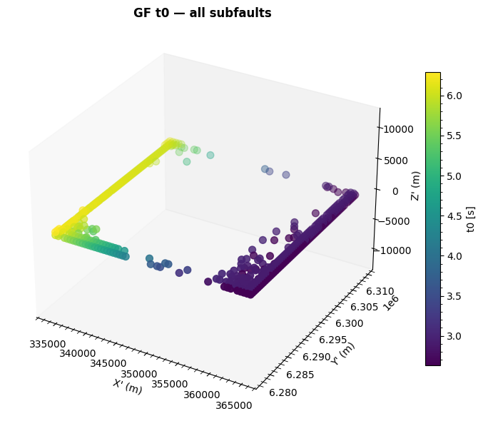
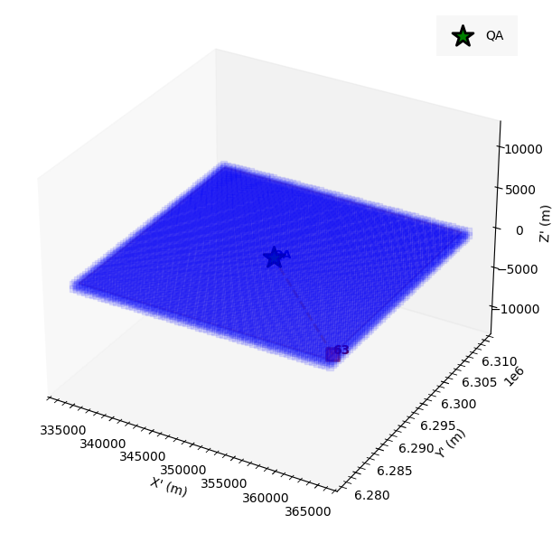
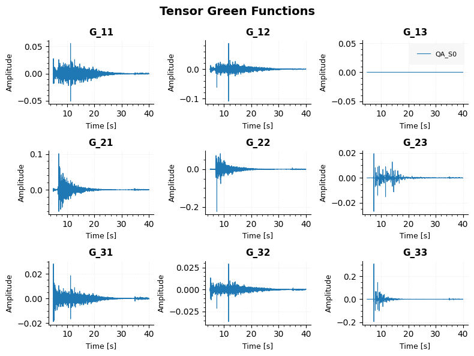
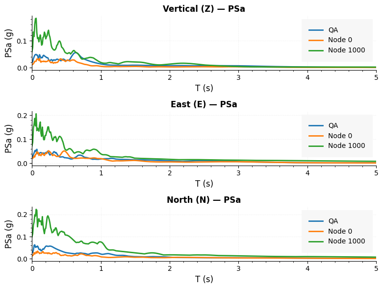
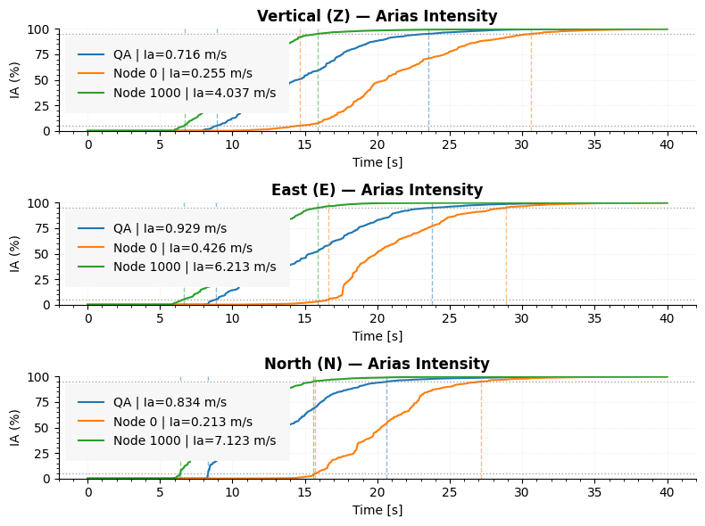
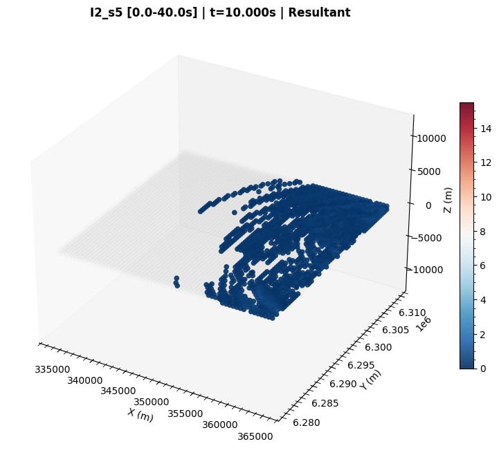
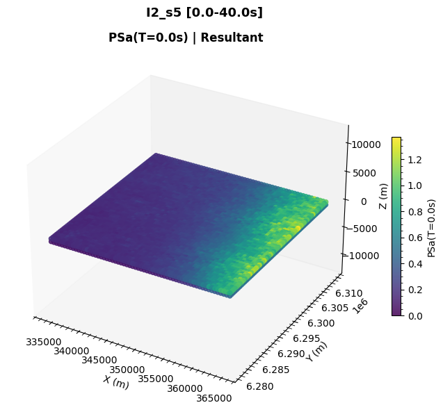
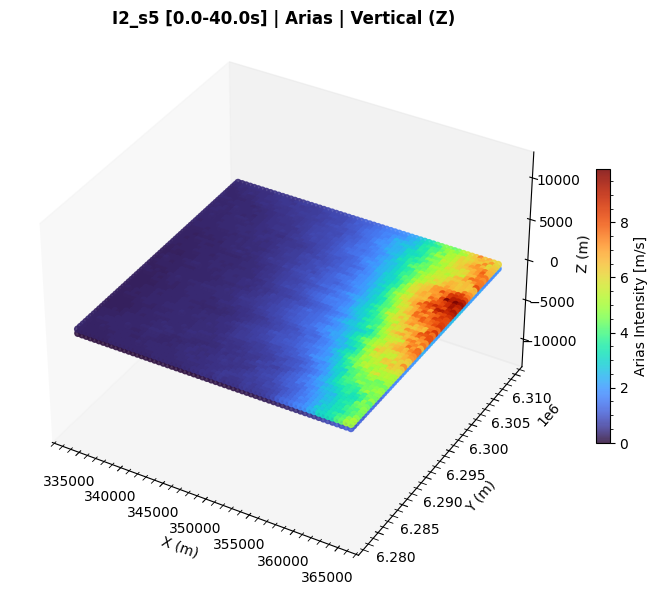

Single-model plotting¶
Every plotting function is available as a method on ShakerMakerData, so the
examples below use model_window. Most figures are 3×1 (Z / E / N) and call
plt.show() directly; a few return data dictionaries (noted inline).
Inputs explained once
Inputs like data_type, component, factor, node_id / target_pos,
cmap, and the animation knobs recur across every method. They are all
defined in the Common parameters glossary — this page
focuses on what each figure shows.
Domain plots¶
plot_domain(xyz_origin=None, label_nodes=False, show_calculated=False, figsize=(8, 6), axis_equal=False)¶
Plot the 3-D node domain (DRM box or surface grid), the QA node, and an optional calculated-node overlay.

plot_domain_calculated_t0(subfault=0, show_calculated_only=False, xyz_origin=None, figsize=(8, 6), axis_equal=True, cmap="viridis")¶
Color the domain by Green's Function t0 for a selected subfault. Requires the
GF map and GF t0.

plot_gf_connections(node_id, xyz_origin=None, label_nodes=False, figsize=(8, 6), axis_equal=False)¶
Show donor/receiver GF relationships for one node.

plot_calculated_vs_reused(db_filename=None, xyz_origin=None, label_nodes=False)¶
Visualise which nodes are computed donors vs. reused receivers.
Node plots¶
plot_node_response(node_id=None, target_pos=None, xlim=None, data_type="vel", figsize=(10, 8), factor=1.0, filtered=False)¶
Plot time histories for one or more nodes.

plot_node_gf(node_id=None, target_pos=None, xlim=None, subfault=0, figsize=(8, 10), ffsp_source=None, strikes=None, dips=None, rakes=None, src_x=None, src_y=None, internal_ref=None, external_coord=None)¶
Plot Green's Function time histories, optionally rotated to physical Z/E/N
components. Returns a dict {'time', 'z', 'e', 'n'}.
plot_node_tensor_gf(node_id=None, target_pos=None, xlim=None, subfault=0, figsize=(10, 8))¶
Plot the full 9-component GF tensor. Returns a dict keyed by node label.

plot_node_newmark(node_id=None, target_pos=None, xlim=None, data_type="accel", figsize=(8, 10), factor=1.0, filtered=False, spectral_type="PSa")¶
Plot Newmark response spectra for one or more nodes.

plot_node_arias(node_id=None, target_pos=None, data_type="accel", xlim=None, figsize=(10, 8), factor=1.0)¶
Plot Arias intensity curves for one or more nodes.

Selecting nodes by position
Node methods accept either node_id (an index) or target_pos (a physical
coordinate); the nearest node is resolved automatically.
Surface plots¶
plot_surface(time=0.0, component="z", data_type="vel", cmap="RdBu_r", figsize=(12, 8), elev=30, azim=-60, s=20, alpha=0.85, axis_equal=False, interpolate=False, interp_method="linear", interp_resolution=300)¶
3-D scatter snapshot of the whole domain at one simulation time.

plot_surface_newmark(T_target=0.0, component="z", data_type="accel", spectral_type="PSa", factor=1.0, cmap="hot_r", figsize=(12, 8), elev=30, azim=-60, s=20, alpha=0.85, axis_equal=False, n_jobs=-1)¶
3-D map of spectral values at one target period T.

plot_surface_arias(component="z", data_type="accel", factor=1.0, cmap="hot_r", figsize=(12, 8), elev=30, azim=-60, s=20, alpha=0.85, axis_equal=False, n_jobs=-1)¶
3-D map of Arias intensity across the domain.

Map plots (geographic)¶
These overlay node data on real basemaps and need folium + geo utilities.
plot_surface_on_map(mapa, time=0.0, component="resultant", data_type="vel", factor=1, cmap="RdBu_r", thresh_pct=0.01, radius=3, fill_opacity=0.85, crs_utm="EPSG:32719")¶
Overlay a single time snapshot on an existing Folium map. Returns the map object.
create_animation_map(...)¶
Render a map animation overlaying node data on a tile basemap (writes an MP4).
Animations¶
Both write an MP4 and require ffmpeg.
create_animation(time_start=0.0, time_end=None, n_frames=50, component="z", data_type="vel", cmap="RdBu_r", figsize=(12, 8), dpi=100, fps=10, elev=30, azim=-60, s=20, alpha=0.85, ffmpeg_path=None, output_dir="animation", output_video="animation.mp4", axis_equal=True, vmax_from_range=False)¶
Render a full-domain 3-D scatter animation.
create_animation_plane(plane="xy", plane_value=0.0, time_start=0.0, time_end=None, n_frames=50, component="z", data_type="vel", cmap="RdBu_r", figsize=(12, 8), dpi=100, fps=10, elev=30, azim=-60, s=50, alpha=0.85, ffmpeg_path=None, output_dir="animation_plane", output_video="animation_plane.mp4", vmax_from_range=False, axis_equal=True)¶
Render an animation for a single planar slice through the domain.
Methods reference¶
| Method | Group | Returns |
|---|---|---|
plot_domain |
domain | (fig, ax) |
plot_domain_calculated_t0 |
domain | (fig, ax) |
plot_gf_connections |
domain | shows figure |
plot_calculated_vs_reused |
domain | (fig, ax) |
plot_node_response |
node | shows figure |
plot_node_gf |
node | dict |
plot_node_tensor_gf |
node | dict |
plot_node_newmark |
node | shows figure |
plot_node_arias |
node | shows figure |
plot_surface |
surface | shows figure |
plot_surface_newmark |
surface | shows figure |
plot_surface_arias |
surface | shows figure |
plot_surface_on_map |
map | folium map |
create_animation |
animation | MP4 file |
create_animation_plane |
animation | MP4 file |
create_animation_map |
map | MP4 file |
Reference¶
See the Plotting API.